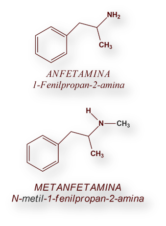
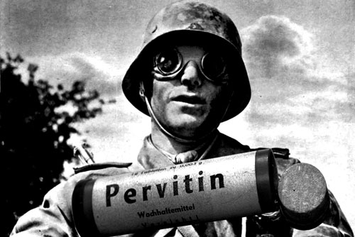

Pero ¿Qué es la metanfetamina? Conocida en la actualidad como «meth», «hielo» o «speed», puede definirse como una
droga estimulante y adictiva. «La metanfetamina afecta el sistema nervioso central. Es un polvo blanco, cristalino, sin olor, y con
sabor amargo que se disuelve fácilmente en agua o licor», completa el «National Institute on Drug Abuse». De la misma opinión es el
« Servicio de Drogodependencia y otras adicciones de la Rioja» que, en su sitio Web
explica que se presenta en polvo y se consume a través de la nariz.
En cuanto a su uso, la metanfetamina se ha hecho famosa por su efecto estimulante, ya que produce, entre
otras cosas, una disminución radical del cansancio -algo esencial para los
soldados que, en medio de la Segunda Guerra Mundial, sabían que mantenerse despiertos podía
significar la diferencia entre vivir o morir-. «Es muy común que esta sustancia
produzca insomnio y falta de apetito mientras se consume.
Es una droga que, en cierto modo, pudo ser muy útil durante aquellos años, pues
permitía a los combatientes estar con los ojos abiertos durante
muchas horas seguidas (hasta 48) y, después, irse a descansar», completa el experto español a este diario.


También puede visitar la siguiente página para informarte sobre la Pervitina.
Pervitina.